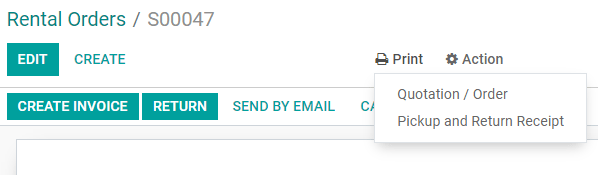

Receipts and invoices¶
Receipts¶
Set up receipts by going to , selecting a POS, and scrolling down to the Bills & Receipts section.
To customize the header and footer, activate Header & Footer and fill in both fields with the information to be printed on the receipts.
To print receipts automatically once the payment is registered, enable the Automatic Receipt Printing setting.

See also
Reprint a receipt¶
From the POS interface, click Orders, open the dropdown selection menu next to the search bar, and change the default All active orders filter to Paid. Then, select the corresponding order and click Print Receipt.
Note
You can filter the list of orders using the search bar. Type in your reference and click Receipt Number, Date, or Customer.
Invoices¶
Point of Sale allows you to issue and print invoices for registered customers upon payment and retrieve all past invoiced orders.
Note
An invoice created in a POS creates an entry into the corresponding accounting journal, previously set up.
Configuration¶
To define what journals will be used for a specific POS, go to the POS’ settings and scroll down to the accounting section. Then, you can determine the accounting journals used by default for orders and invoices in the Default Journals section.

Invoice a customer¶
Upon processing a payment, click Invoice underneath the customer’s name to issue an invoice for that order.
Select the payment method and click Validate. The invoice is automatically issued and ready to be downloaded and/or printed.
Note
To be able to issue an invoice, a customer must be selected.
Retrieve invoices¶
To retrieve invoices from the POS dashboard,
access all orders made through your POS by going to ;
to access an order’s invoice, open the order form by selecting the order, then click Invoice.

Note
Invoiced orders can be identified by the Invoiced status in the Status column.
You can filter the list of orders to invoiced orders by clicking Filters and Invoiced.
QR codes to generate invoices¶
Customers can also request an invoice by scanning the QR code printed on their receipt. Upon scanning, they must fill in a form with their billing information and click Get my invoice. On the one hand, doing so generates an invoice available for download. On the other hand, the order status goes from Paid or Posted to Invoiced in the Odoo backend.

To use this feature, you have to enable QR codes on receipts by going to . Then, select the POS in the Point of Sale field, scroll down to the Bills & Receipts section and enable Use QR code on ticket.